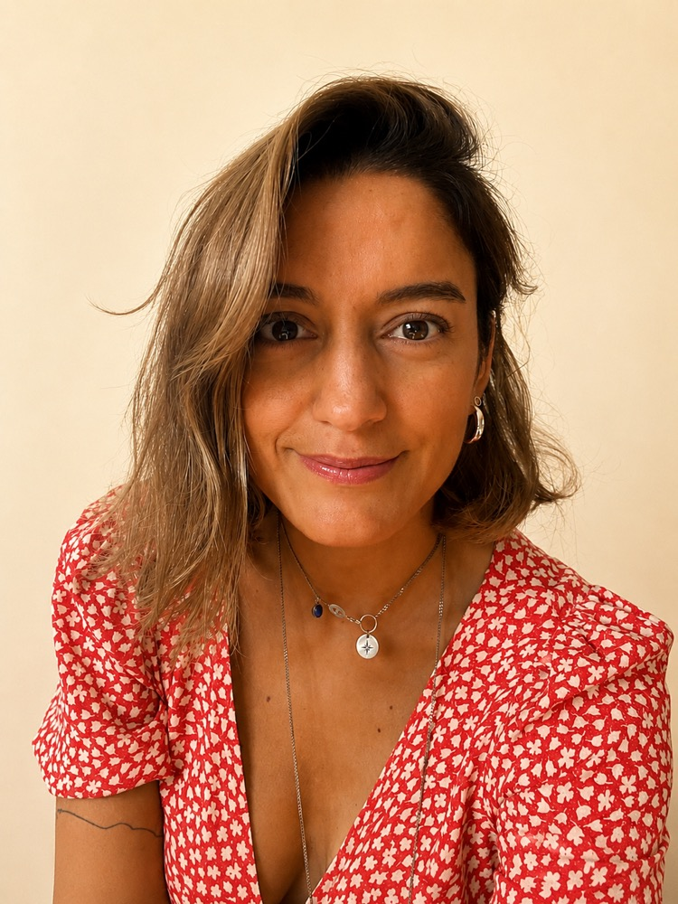

Psikolog, yazar ve yoga eğitmeniyim. Yıllardır annelerin yanında, bağlanma temelli bir bakışla çalışıyorum. Annelik; çoğu zaman büyük bir sevgiyle birlikte yorgunluğu, kararsızlığı ve kendi iç sesini kaybetme korkusunu da getiriyor. Ben de bu yolculukta annelere eşlik ediyorum.
Hem danışanlarımla yürüttüğüm bireysel görüşmelerde hem de düzenlediğim atölyelerde, kadınların kendi köklerini yeniden bulmasına alan açmaya çalışıyorum. Yaklaşımımın merkezinde bağlanma kuramı var: çocukla kurulan bağın, önce annenin kendisiyle kurduğu bağdan beslendiğine inanıyorum.
Yazı benim için düşünmenin başka bir yolu. Denemelerim ve üzerinde çalıştığım minik öykülerim, terapi odasında ve hayatta gördüklerimin bir uzantısı. Yoga eğitmenliğim ise bedenle kurduğum bağı tazeliyor; nefesle, hareketle yeniden kendime dönmenin bir yolu.
Bireysel görüşme, atölye ya da yoga hakkında konuşmak için bana yazabilirsiniz.
İletişime geç